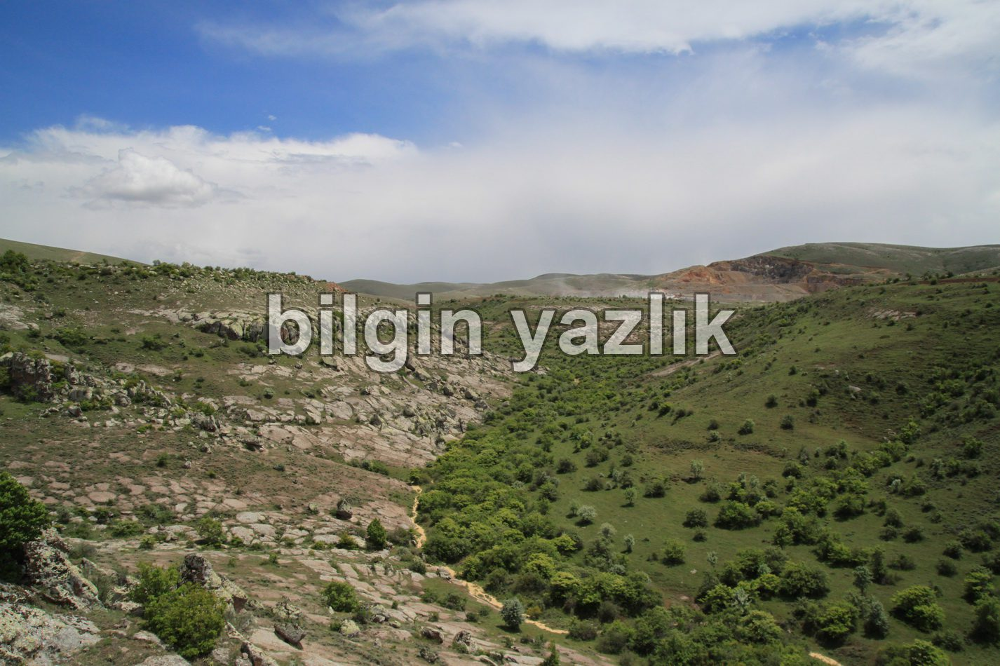
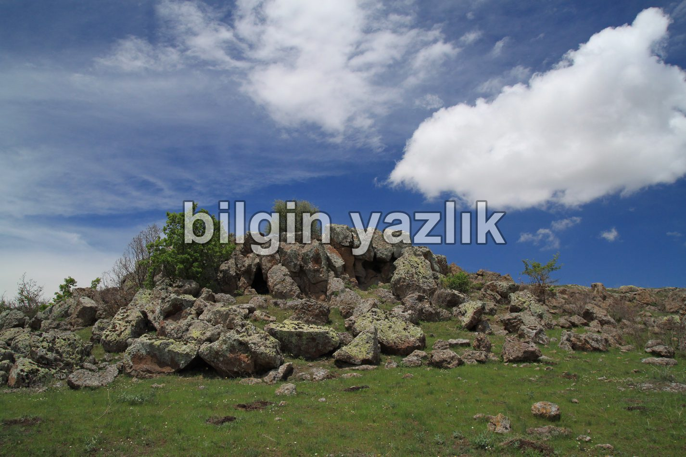
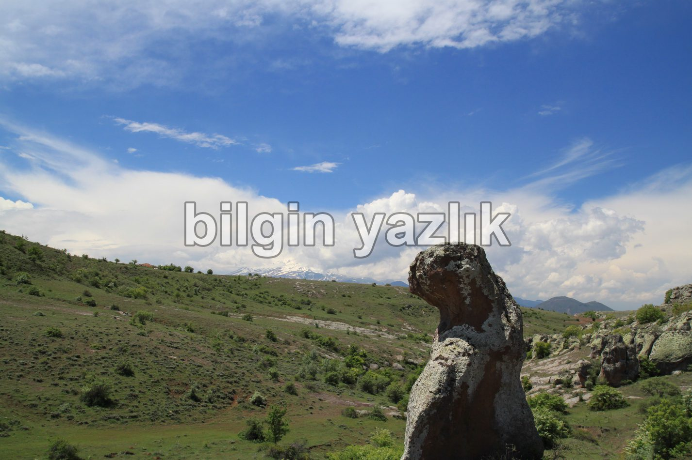
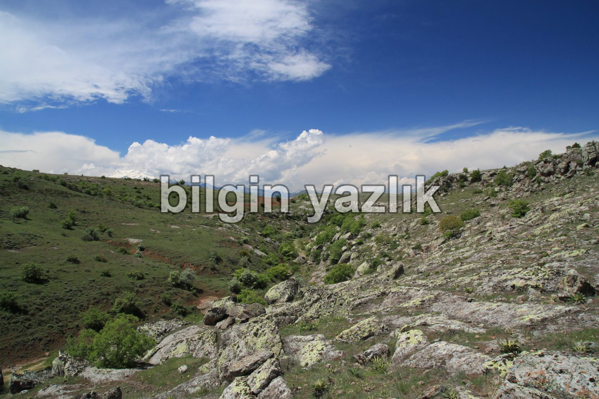
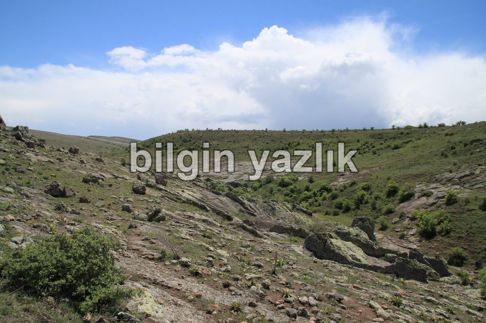

Çam Dere Vadisi
Kayseri İli Gürpınar Mahallesinin doğusunda yer alan bu vadi, Gürpınar Mahallesinden başlayarak Güllüce’ye kadar gitmektedir. Yaklaşık 10 km uzunluğa sahip olan bu vadi içerisinde çok sayıda meşe ve yöreye has kavak ağaçları bulunuyor. Yöre halkının Çam Dere demesinin nedenini anlamadım, zira vadide bir tane bile çam ağacı göremedim, belki de eskiden bu vadinin içi çam ağaçları ile bezeli idi, kim bilir?
Vadide az sayıda mağara bulunuyor, bu mağaralarda güncel ya da geçmiş bir yaşam izine rastlayamadım.
Vadi içerisinde yürüyüş boyunca iki tane tavşan gördüm, bir de oyma bir ağıl bulunuyordu vadide.
Vadi içerisinden akan su oldukça azalmıştı, bahar aylarında suyun debisinin arttığı aşikar, su rotasında şelale olabilecek kaya yapıları gördüm, muhtemelen bahar aylarında bu vadi içerisinde en az bir tane şelale çağlıyordur.
Konum: https://www.google.com.tr/maps/place/38%C2%B042’29.9%22N+35%C2%B043’34.0%22E/@38.708316,35.723912,1011m/data=!3m2!1e3!4b1!4m5!3m4!1s0x0:0x0!8m2!3d38.708316!4d35.726106





Bu yazı taliyol arşivinden taşınmıştır. · özgün kayıt